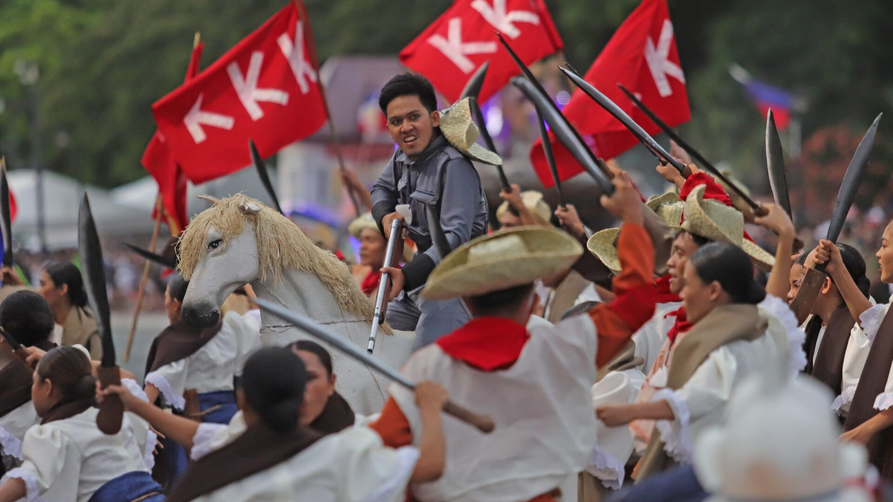

Independence Day
June 12
 Philippine Independence Day is celebrated annually on June 12th. On this day, the country's declaration of independence from Spanish colonial rule in 1898 is remembered. This is a significant national holiday marked by various celebrations and activities across the Philippines. It is a time for Filipinos to think about and honor the people who fought for our freedom.
Philippine Independence Day is celebrated annually on June 12th. On this day, the country's declaration of independence from Spanish colonial rule in 1898 is remembered. This is a significant national holiday marked by various celebrations and activities across the Philippines. It is a time for Filipinos to think about and honor the people who fought for our freedom.
 Some important places are notable for Independence Day events. This includes Luneta Park (also called Rizal Park), which is a historical landmark in Manila. It is named after Dr. Jose Rizal, a national hero who was executed by the Spanish colonial government. The park holds a major symbol of the fight for independence. Official ceremonies may also take place in Aguinaldo Shrine. This is the official site where Philippine independence was proclaimed in 1898 by Emilio Aguinaldo, the first president of the Philippines.
Some important places are notable for Independence Day events. This includes Luneta Park (also called Rizal Park), which is a historical landmark in Manila. It is named after Dr. Jose Rizal, a national hero who was executed by the Spanish colonial government. The park holds a major symbol of the fight for independence. Official ceremonies may also take place in Aguinaldo Shrine. This is the official site where Philippine independence was proclaimed in 1898 by Emilio Aguinaldo, the first president of the Philippines.
The struggle for independence was led by various individuals and groups, with the Katipunan (KKK) playing a remarkable role. This was a secret group led by Andres Bonifacio, and they were a major force in the fight against the Spanish. Remembering the KKK and what they did is also an essential part of celebrating Independence Day.

Passed by: Julia Kyla Rustia